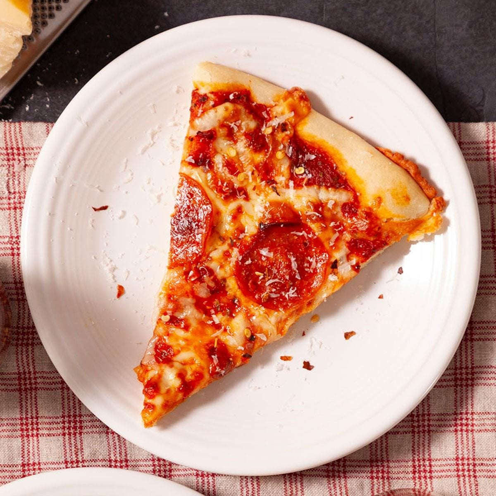

Pizza Recipe

Description
Pizza is an Italian dish typically consisting of a flat base of leavened wheat-based dough topped with tomato, cheese, and other ingredients, baked at a high temperature, traditionally in a wood-fired oven.
Ingredients
For the dough
- Yeast
- Water
- Flour
- Oil
- Salt
- Sugar
- Cornmeal
Toppings
- Mozzarella cheese
- Tomatoe sauce
- Pepperoni
Steps
- Make the dough: Mix the dough ingredients together by hand or use a hand-held or stand mixer. Do this in steps as described in the written recipe below.
- Knead: Knead by hand or with your mixer. I like doing this by hand. If you’re new to yeasted doughs, my How to Knead Dough post and video can help with this step.
- Rise: Place dough into a greased mixing bowl, cover tightly, and set aside to rise for about 90 minutes or overnight in the refrigerator.
- Punch & shape: Punch down risen dough to release air bubbles. Divide in 2. Roll dough out into a 12-inch circle. Cover and rest as you prep the pizza toppings.
- Top it: with pizza toppings.
- Bake: Bake pizza at a very high temperature for only about 15 minutes.
Navigation